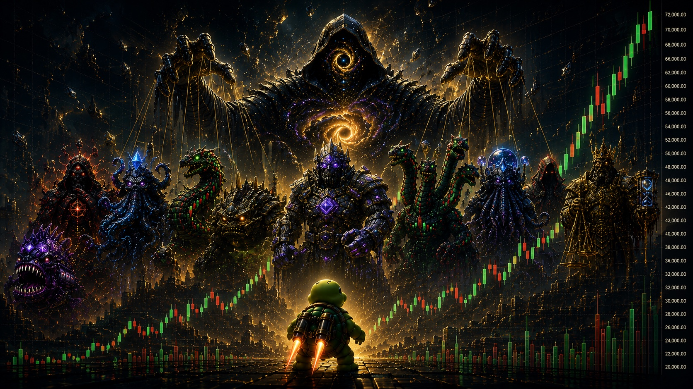
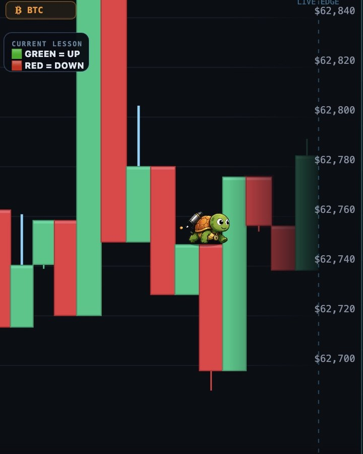
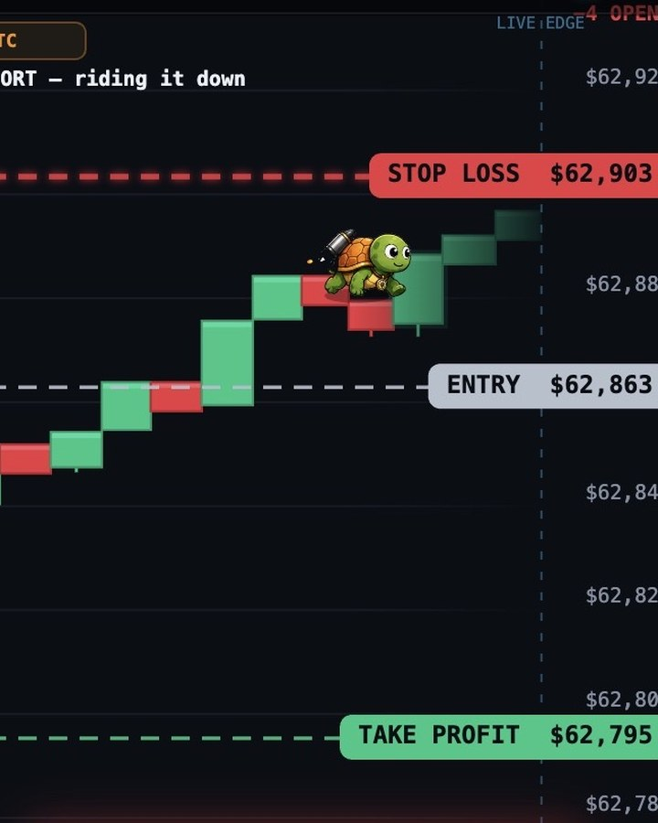
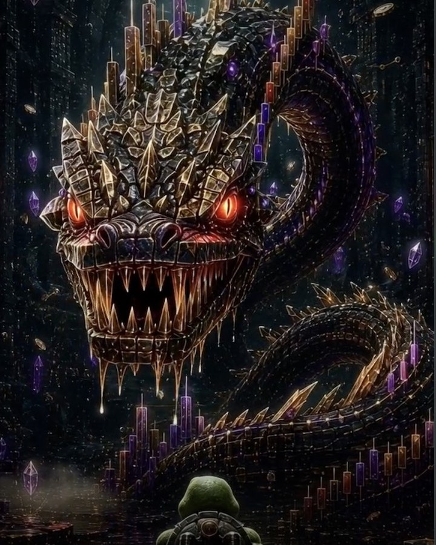
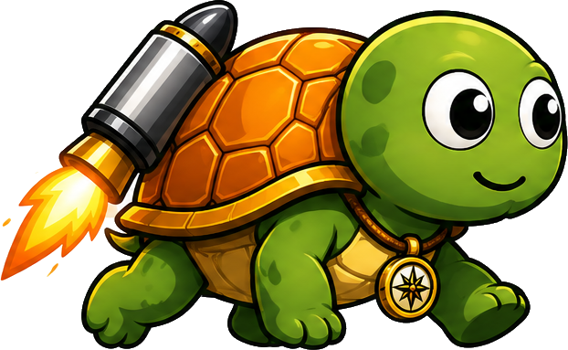

THE CHART
IS THE WORLD
A living Bitcoin chart, eleven bosses, and one turtle learning to trade for real.
A turtle. A living chart.
Three ways to play.
ChartQuest drops you inside the market. Not a course. Not a simulator. A world you explore, trade, and battle your way through.

Run the chart
Every candle is ground to stand on. Sprint across live markets, from tutorial hills to volatile peaks.

Read the setup
Spot the signal, pick a side, set your risk. Real trader decisions — with play money, so mistakes are free.

Defeat the Guardians
Each world is sealed by a boss who tests the skill you just learned. Beat them to unlock what lies deeper.
This is a real market.
Every adventure begins on a real Bitcoin chart. This one updates live, right now. Finn jumps inside it — and so will you.
You don't finish courses.
You finish games.

This is Finn.
A turtle explorer lost inside the blockchain, searching for the way to become a Master Trader. He's calm under pressure, allergic to FOMO, and he'll be beside you the whole way down — because he's learning it too.
Follow Finn and you can't get lost. Slow and steady really does win this one.
The map ahead
ChartQuest is being built in the open. Here's the journey — and where you jump in.
ENTER THE CHART.
No download. No sign-up. The world is live and waiting. Step inside.